BIO 5 · Human Biology · Fall 2026 · Whalen
Week 12 — Endocrine System
Each source keeps its own tab; the last tab blends them into one account of the week.
Deadlines this week
-
Mon 10/26
Readings: Ch. 10 · Ch. 10a
read before the week's lectures -
Mon 10/26
Board work sheet
handed in at the start of lab -
Fri 10/30
11:59pm Mastering Biology DSM: CH 10
1 pt -
Fri 10/30
11:59pm WK 12 Practice Test
5 pts -
Fri 10/30
11:59pm Lab 11 document — 10 pts
Lab 11: Endocrine System · Lab 11 Quiz, 15 pts
This week's lab
- Lab 11 — Endocrine System
Monday 10/26
Coming up
- Week 13 — Blood · Unit 3 Exam
Nov 2–6, 2026
Chapter 10 — The Endocrine System
Captured from the Pearson eText. pp. 171–189.
- 10.1 Functions and Mechanisms of Hormones
- 10.2 Hypothalamus and Pituitary Gland
- 10.3 Thyroid Gland
- 10.4 Parathyroid Glands
- 10.5 Adrenal Glands
- 10.6 Pancreas
- 10.7 Thymus Gland
- 10.8 Pineal Gland
- 10.9 Locally Acting Chemical Messengers
Did you know
- Synthetic human growth hormone (HGH) is approved for children of short stature, but not for adults to improve athletic performance or slow aging.
- Laughter lowers levels of stress hormones such as cortisol and epinephrine.
Opening
Chapters 7–9 were the nervous system: rapid messages across synaptic clefts. The endocrine system is the leisurely one — its messages travel in the bloodstream. Its hormones drive long-term changes (growth, development) and short-term ones (the fight-or-flight response). Because both systems regulate and coordinate all the body's systems, some treat them as one, the neuroendocrine system. (p. 171)
The chapter as one chain
- Hormones are blood-borne messages read only by target cells — every cell is exposed; only cells with the matching receptor respond.
- Chemistry decides mechanism — lipid-soluble steroids enter the cell and switch genes on (new proteins); water-soluble hormones stay outside and work through a second messenger such as cAMP (existing enzymes).
- Negative feedback holds most hormones in range; a few loops (oxytocin in childbirth and nursing) run on positive feedback until something breaks the cycle.
- The hypothalamus sits on top — it controls the anterior pituitary through blood and the posterior pituitary through nerves.
- The anterior pituitary's tropic hormones (TSH, ACTH, FSH, LH) run the next tier — thyroid, adrenal cortex, gonads.
- Each gland is a hormone, a job, and its disorders of too much and too little.
- Antagonist pairs hold a variable steady — calcitonin vs PTH for calcium, insulin vs glucagon for glucose — setting up Ch. 10a on diabetes.
- Local messengers act next door within seconds — neurotransmitters, prostaglandins, growth factors, nitric oxide.
10.1Functions and Mechanisms of Hormones
pp. 172–175Glands and the endocrine system
- Exocrine glands secrete into ducts that lead to body surfaces, cavities or spaces within organs — oil (sebaceous) glands onto the skin, salivary glands into the mouth.
- Endocrine glands lack ducts. Their cells release hormones into the extracellular fluid just outside the cells; the hormones diffuse from there into the bloodstream.
- Endocrine system — the endocrine glands plus organs that contain some endocrine tissue but have other jobs too.
- Major glands: pituitary, thyroid, parathyroid, adrenal, pineal.
- Organs with endocrine tissue: hypothalamus, thymus, pancreas, ovaries, testes, heart, placenta; also stomach, small intestine, kidneys.
- The chapter covers the major glands plus the hypothalamus, thymus and pancreas; kidneys are Ch. 16, ovaries and testes Ch. 17.
- Like the nervous system, the endocrine system's main job is to regulate and coordinate the other systems and so maintain homeostasis.


whether the thymus is a gland or an organ with endocrine tissue; §10.1 lists the thymus among organs that merely contain endocrine tissue, while §10.7's heading and Figure 10.2 call it the "thymus gland". A wording difference, not a factual one.
How hormones act on target cells
- Hormones are released in very small amounts and contact virtually all cells, but most affect only the target cell — a cell with receptors, proteins that recognise and bind a specific hormone. Binding forms a hormone–receptor complex, which exerts the effect; cells without the receptor are unaffected.
- Lipid-soluble hormones include the steroid hormones, derived from cholesterol and made mainly by the ovaries, testes and adrenal glands. The steroid diffuses through the membrane's lipid bilayer → binds a receptor in the cytoplasm or nucleus → the complex enters the nucleus (if it formed in the cytoplasm) → attaches to DNA and activates genes → the cell makes specific proteins, including enzymes → the enzymes speed or block metabolic pathways.
- Water-soluble hormones (protein and peptide hormones) cannot cross the bilayer. The hormone is the first messenger, binding a surface receptor; that activates a second messenger inside the cell, which changes enzyme activity. Cyclic AMP (cAMP) is a common one.
- Epinephrine on a liver cell: epinephrine binds → the enzyme that converts ATP to cAMP is activated → cAMP starts an enzyme cascade → the last enzyme breaks glycogen down to glucose.
- So steroids make the cell build new proteins; water-soluble hormones activate proteins already there, without ever entering the cell.
- The split is not absolute: classic steroid action takes hours to days, but steroids can also act in seconds to minutes, probably through membrane receptors and without changing gene expression. Not yet fully characterised.
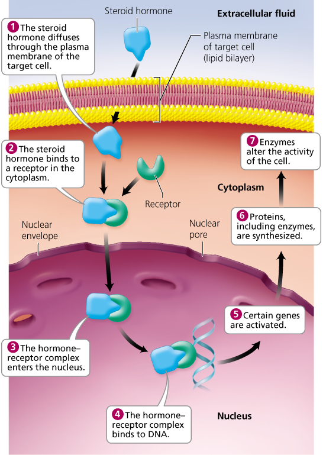

Feedback and secretion
- Hormone release is stimulated by other hormones, by nervous-system signals, or by changes in blood levels of ions (e.g. Ca2+) or nutrients (e.g. glucose).
- Negative feedback mechanism — the outcome feeds back and shuts the process down; regulates most hormones (Ch. 4).
- Usually rising blood levels of the hormone inhibit its own release.
- Alternatively the gland senses the condition it regulates: high glucose → insulin → liver stores glucose → glucose falls → the pancreas stops secreting insulin.
- Positive feedback mechanism — the outcome stimulates the process to continue. Oxytocin (OT) in childbirth: the baby's head stretches the cervix → nerve impulses to the hypothalamus → hypothalamus signals the posterior pituitary to release OT → OT makes uterine smooth muscle contract harder → more cervical dilation → more OT. Expulsion of the baby and placenta breaks the cycle.

Interactions between hormones
- antagonistic
- one hormone opposes another — glucagon raises blood glucose, insulin lowers it
- synergistic
- two together far exceed either alone — epinephrine and glucagon together make the liver release more glucose than the sum of each acting alone
- permissive
- one must be present for another to act — thyroid hormone must be present for aldosterone to stimulate sodium reabsorption in the kidney tubules
10.2Hypothalamus and Pituitary Gland
pp. 176–180Two lobes, two connections
- The pituitary gland is pea-sized, hung from the base of the brain by a short stalk to the hypothalamus — the brain area regulating body temperature, sleep and water balance. Its two lobes differ in size, in their link to the hypothalamus, and in their hormones.
- Anterior lobe — the larger; a circulatory connection. Capillaries at the base of the hypothalamus run through the stalk into veins that lead to more capillaries in the anterior lobe.
- Neurosecretory cells in the hypothalamus — neurons that also make and secrete hormones — release into this blood. Releasing hormones stimulate anterior-pituitary secretion; inhibiting hormones inhibit it.
- The anterior lobe adjusts six hormones: growth hormone (GH), prolactin (PRL), thyroid-stimulating hormone (TSH), adrenocorticotropic hormone (ACTH), follicle-stimulating hormone (FSH), luteinizing hormone (LH).
- Posterior lobe — very small, just larger than a pinhead, made of neural tissue; a neural connection. Hypothalamic neurosecretory cells project straight into it and make OT and ADH, which travel down the axons to terminals in the posterior pituitary and are stored there until released into the blood.

Anterior lobe hormones
- Growth hormone (GH) stimulates growth through larger cells and faster cell division; bone, muscle and cartilage respond most. It also conserves glucose by making fats more available as fuel.
- Controlled by growth hormone–releasing hormone (GHRH) and growth hormone–inhibiting hormone (GHIH) from the hypothalamus.
- Gigantism — too much GH in childhood, while bones can still lengthen: heights of 8–9 feet. Acromegaly ("enlarged extremities") — too much in adulthood, when bones only thicken: hands, feet and face. Both shorten life expectancy; the cause is often an anterior-pituitary tumor, treated first by surgery, then radiation or drugs if needed.
- Pituitary dwarfism — too little GH in childhood; usually sterile, about 4 feet at most. Childhood GH treats it, but not other dwarfisms.
- GH once came only from cadaver pituitaries; lab-made GH since the late 1970s opened its use for aging and short stature (Ethical Issue, below).
- Prolactin (PRL) makes the mammary glands produce milk (OT ejects it). It interferes with female sex hormones, so most nursing mothers lack regular cycles — though lactation is not reliable birth control, since the suppression fades as nursing becomes less frequent. A pituitary tumor making excess PRL causes infertility and milk without birth in females, sterility and impotence in males. In males PRL seems to play a role in sperm maturation, not yet clear. Hypothalamic hormones both stimulate and inhibit it.
- Tropic hormone — a hormone from one endocrine gland that acts on another. Four of the six are tropic:
- TSH — stimulates the thyroid to make and release thyroid hormones.
- ACTH (corticotropin) — controls glucocorticoid secretion by the adrenal cortex.
- FSH — females: development of egg cells and estrogen secretion by the ovaries; males: sperm maturation.
- LH — females: ovulation (release of a future egg cell) and estrogen and progesterone secretion, which prepare the uterus for implantation and the breasts for milk; males: testosterone production by the testes.


how FSH's effects are worded; the §10.2 text says FSH promotes "development of egg cells and secretion of estrogen" in females and "maturation of sperm" in males, while Figure 10.2's label says "Stimulates gamete production" and "Stimulates secretion of estrogen by ovaries". Same substance, different wording.
Posterior lobe hormones
- The posterior pituitary makes no hormones of its own — it stores and releases two made by hypothalamic neurosecretory cells.
- Antidiuretic hormone (ADH), also vasopressin, conserves water by cutting urine output: the kidneys pull water from the fluid becoming urine back into the blood. Alcohol temporarily inhibits ADH — more urine, dehydration, the headache and dry mouth of a hangover. "Vasopressin" names its other role: constricting vessels to raise blood pressure, especially after severe blood loss.
- Diabetes insipidus — ADH deficiency from damage to the posterior pituitary or the hypothalamic region that makes it: excess urine and dehydration, fatal in severe cases; treated with a synthetic ADH nasal spray. Not diabetes mellitus (glucose lost in urine, insulin deficiency) — though both raise urine output. (insipidus, tasteless; mel, honey.)
- Oxytocin (OT) (oxy, quick; tokos, childbirth) has two main jobs.
- Uterine contractions in labor, by positive feedback (Figure 10.5). Pitocin is synthetic OT, used to induce and speed labor.
- Milk ejection: infant sucking stimulates nipple receptors → impulses to the hypothalamus → posterior pituitary releases OT → OT reaches the smooth muscle around the milk sacs → they contract and milk is ejected.
- Men secrete OT too; it may aid sperm transport.

10.3Thyroid Gland
pp. 181Structure and thyroid hormone
- The thyroid gland is shield-shaped and deep red (a rich blood supply), in the front of the neck. Inside are spherical follicles whose lining cells make thyroglobulin, the raw material for thyroxine (T4) and triiodothyronine (T3) — four and three iodines. More T4 is made, and most is eventually converted to T3; together they are thyroid hormone (TH). Parafollicular cells near the follicles make calcitonin.
- Nearly all cells are TH targets. TH regulates metabolic rate and heat production, maintains blood pressure, and promotes normal development and function of several organ systems; in cells it stimulates protein synthesis, lipid breakdown and the use of glucose to make ATP.
- Control: falling TH → hypothalamic releasing hormone → anterior pituitary secretes TSH → thyroid releases more TH.

Thyroid disorders
- Simple goiter — an enlarged thyroid from too little iodine. Low TH keeps TSH rising; the gland makes more thyroglobulin it cannot convert, and enlarges trying to filter more iodine from the blood. Once common in the Midwest "Goiter Belt" (iodine-poor soil, little shellfish); rare since iodine was added to table salt from the 1920s. Treated with iodine or TH.
- Cretinism — too little TH in the fetus or infant: dwarfism, delayed mental and sexual development. Symptoms may wait until after birth if the mother's TH covered the fetus. Prevented with oral TH; most newborns in industrialised nations are tested. Incomplete thyroid development: about 1 in 3000 US births.
- Myxedema — too little TH in adults: fluid in the facial tissues, lower alertness, body temperature and heart rate. Treated with oral TH.
- Graves' disease — too much TH. Autoimmune: Y-shaped antibodies (Ch. 13) mimic TSH, so the thyroid enlarges and overproduces. Faster metabolism and heart rate, sweating, nervousness, weight loss; often exophthalmos, protruding eyes from swollen tissue in the orbits. Treated with drugs that block TH synthesis, surgery, or radioactive iodine (usually capsules), which the thyroid concentrates and so destroys selectively.
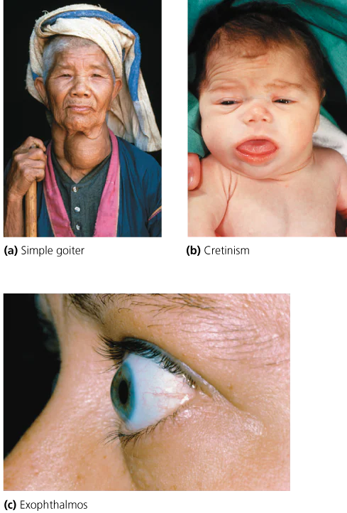
Calcitonin
- Calcitonin (CT) from the parafollicular cells keeps blood calcium right for muscle and nerve: calcium binds troponin to trigger contraction (Ch. 6) and triggers neurotransmitter release (Ch. 7).
- When blood calcium is high, CT makes bone absorb calcium and inhibits bone breakdown, and briefly raises calcium excretion in urine — lowering blood calcium.
- Most important in childhood growth and pregnancy; its role in nonpregnant adults is uncertain. Low calcium is the parathyroids' job.
what calcitonin lowers; the §10.3 text says calcitonin lowers blood calcium, while Figure 10.2's label says it "Decreases blood levels of calcium and phosphate". The text never mentions phosphate.
10.4Parathyroid Glands
pp. 182PTH and calcium
- The parathyroid glands are four small round masses on the back of the thyroid (Figure 10.11a). They secrete parathyroid hormone (PTH), or parathormone, which raises blood calcium (Ch. 5); low calcium triggers it.
- PTH stimulates (1) osteoclasts, bone-destroying cells, to release calcium into the blood; (2) the kidneys to reabsorb more calcium from the filtrate (the fluid in the nephrons, some of which becomes urine); (3) calcium absorption from the gastrointestinal tract. It also inhibits osteoblasts, bone-forming cells, so less calcium is deposited.
- Too little PTH — often from damage in neck or thyroid surgery: low calcium makes neuron membranes hyperexcitable — nervousness, irritability, muscle spasms; in severe cases death from spasm of the larynx and respiratory paralysis. PTH is hard to purify, so calcium is given (tablets or diet) instead.
- Too much PTH — e.g. a parathyroid tumor: calcium pulled from bone, so high blood calcium and weak bones; kidney stones, calcium deposits in soft tissue, depressed nervous activity.

10.5Adrenal Glands
pp. 183Adrenal cortex
- The adrenal glands (ad, upon; renal, kidney) are almond-sized, one on top of each kidney. The outer adrenal cortex secretes more than 20 lipid-soluble (steroid) hormones; the inner adrenal medulla secretes two water-soluble ones, epinephrine (adrenaline) and norepinephrine (noradrenaline).
- Gonadocorticoids — androgens and estrogens, made by the cortex in both sexes. In adult males testicular androgen far outweighs adrenal, so the adrenal share is probably insignificant. In females the ovaries and placenta also make estrogen; after menopause ovarian estrogen stops, and adrenal gonadocorticoids may ease the effects somewhat (Ch. 17).
- Mineralocorticoids — mineral and water balance. The main one, aldosterone, makes the kidneys reabsorb Na+ and water into the blood (preventing Na+ depletion, raising blood volume and pressure) and excrete K+ in urine.
- Addison's disease — too little aldosterone and cortisol, apparently autoimmune destruction of cortex cells: weight loss, fatigue, electrolyte imbalance, poor appetite, poor stress resistance, and a bronzing of the skin. Treated with hormone tablets.
- Glucocorticoids — cortisol, corticosterone, cortisone — affect glucose. They make the liver convert fat and protein into intermediates that become glucose, make muscle release amino acids and fat release fatty acids that other tissues burn instead of glucose, and inhibit glucose uptake by muscle and fat.
- They also inhibit inflammation — slowing white blood cells to the injury and reducing release of inflammatory chemicals — but that slows wound healing, so steroid creams are for superficial rashes like poison ivy, never open wounds.
- Cushing's syndrome — prolonged high cortisol: fat redistributed, fluid in the face, fatigue, high blood pressure, high glucose. Caused by a tumor of the adrenal cortex or of the anterior pituitary (ACTH), or by glucocorticoid treatment for asthma, lupus or rheumatoid arthritis. Tumors: radiation, drugs or surgery; drug-induced cases: taper to the lowest effective dose.
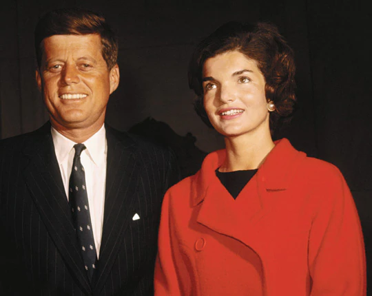
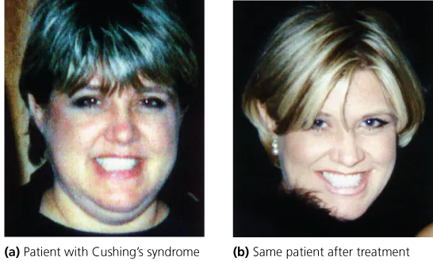
Adrenal medulla and the stress response
- The medulla drives the fight-or-flight response, the sympathetic system's reaction to emergency or short-term stress (Ch. 8). A stranger steps out at night → the hypothalamus sends impulses by neurons to the medulla → epinephrine and norepinephrine → heart rate, breathing rate and blood glucose rise; vessels to skeletal and heart muscle dilate, more reaches the brain (alertness), digestive-tract vessels constrict.
- Long-term stress reaches the cortex by hormones, not nerves: the hypothalamus releases corticotropin-releasing hormone (CRH) → anterior pituitary releases ACTH → cortex secretes glucocorticoids. Slower to start, longer lasting. Independently of the hypothalamus, the cortex also releases mineralocorticoids, which add to the long-term response.

whether mineralocorticoid release depends on the hypothalamus; the §10.5 text says the cortex releases mineralocorticoids "independent of the hypothalamus", while Figure 10.16 draws mineralocorticoids and glucocorticoids leaving the same cortex at the end of the single CRH → ACTH pathway, with no separate route.
10.6Pancreas
pp. 184Islets, glucagon and insulin
- The pancreas lies in the abdomen just behind the stomach and is both exocrine (digestive enzymes, Ch. 15) and endocrine. Its endocrine cells sit in pancreatic islets (islets of Langerhans) with three hormone-making types: glucagon, insulin and somatostatin.
- Somatostatin is also made by the digestive tract (inhibits stomach and intestinal secretions) and the hypothalamus (inhibits GH). Pancreatic somatostatin may regulate glucagon and insulin; its function is poorly understood.
- Glucagon — between meals, as glucose falls: the liver converts glycogen (animal storage polysaccharide) to glucose and makes glucose from lactic acid and amino acids, then releases it. Blood glucose rises.
- Insulin — after a meal, as glucose rises: moves glucose into muscle cells, white blood cells and connective tissue cells; inhibits glycogen breakdown; blocks conversion of amino and fatty acids to glucose. Net: protein synthesis, fat storage, glucose burned for energy. Blood glucose falls. Insulin and glucagon are antagonistic.
- Diabetes mellitus — metabolic disorders with abnormally high blood glucose from problems in insulin production or function (Ch. 10a).


which tissues insulin sends glucose into; the §10.6 text lists muscle cells, white blood cells and connective tissue cells, while Figure 10.18 shows muscle cells taking up glucose and adipose tissue using glucose to form fat. Consistent with "fat storage" in the text, but only the figure names adipose tissue.
10.7Thymus Gland
pp. 185T-cell maturation
- The thymus gland sits behind the breastbone, on top of the heart; prominent in infants and children, it shrinks with age.
- Its hormones, thymopoietin and thymosin, promote maturation of T lymphocytes: precursor cells travel from bone marrow in the blood to the thymus and mature into T cells, part of the body's defenses (Ch. 13).
10.8Pineal Gland
pp. 186Melatonin and SAD
- The pineal gland is tiny, at the center of the brain; it makes melatonin. Light stimulates retinal neurons, which signal the hypothalamus and then the pineal gland, inhibiting melatonin — so levels are higher at night.
- Research suggests roles in sleep and, for some people, seasonal mood.
- Seasonal affective disorder (SAD) — winter depression from too much melatonin as short days cut light exposure: lethargy, long sleep, low spirits, carbohydrate craving. Usually October to April in the Northern Hemisphere; three-quarters of sufferers are female. Treated with about an hour a day of very bright light, which inhibits melatonin.
how firmly melatonin's job is stated; the §10.8 text says research "has suggested" roles in sleep and mood, the chapter summary says melatonin "establishes biological rhythms and triggers sleep", and Figure 10.2 says it "Reduces jet lag and promotes sleep". The summary and figure state as settled what the text hedges.
10.9Locally Acting Chemical Messengers
pp. 187Local messengers
- Local signaling molecules act on adjacent cells near their release site, in seconds or milliseconds; a hormone-driven response like fight-or-flight can take 30 seconds to begin. Neurotransmitters (Ch. 7) are one kind.
- Prostaglandins — lipids continually released by the membranes of most cells; at least 16 kinds. They affect blood clotting, body temperature, airway diameter, inflammation and reproduction. Uterine-lining prostaglandins cause menstrual cramps by contracting uterine muscle — aspirin and ibuprofen block their synthesis. Prostaglandins in semen contract the uterus, perhaps helping sperm along.
- Growth factors — peptides or proteins outside target cells that make them grow, develop and multiply: one turns bone-marrow precursors into particular white blood cells; another organises endothelial cells into tubes that become blood vessels (Ch. 12).
- Nitric oxide (NO) — a gas. Endothelial cells lining a vessel release it and the surrounding smooth muscle relaxes, dilating the vessel. It also aids peristalsis (waves of smooth-muscle contraction pushing food along the gut) and acts as a neurotransmitter.
- Histamine is another local messenger (Ch. 13).
Stop And Think
1Thyroid hormone is needed for reproductive hormones to stimulate maturation of the reproductive organs. What type of hormonal interaction is this? (§10.1, p. 175)
Permissive — one hormone must be present for the other to act.
2New mothers are encouraged to nurse soon after delivery. How might suckling help finish and recover from the birth, given that the placenta must still be expelled and the uterus must return toward its prepregnancy size? (§10.2, p. 180)
Suckling releases OT, and OT contracts the uterus as well as ejecting milk — helping expel the placenta and shrink the uterus.
3Why is electrolyte imbalance a symptom of Addison's disease? Is Na+ high or low? K+? (§10.5, p. 183)
Too little aldosterone: the kidneys stop reabsorbing Na+ and excreting K+, so Na+ is low and K+ is high.
Figure Questions
1Look closely at how the water-soluble hormone influences the cell. How do its actions differ from those of lipid-soluble hormones? (Figure 10.4, p. 174)
It never enters the cell — it binds a surface receptor and works through cAMP to activate enzymes already present. A steroid enters, binds an internal receptor and switches on genes so the cell makes new proteins.
End Of Chapter Questions
1Choose the incorrect statement:
a) Endocrine glands secrete their hormones through ducts. b) The endocrine system consists of endocrine glands and organs with endocrine tissue. c) Negative feedback mechanisms regulate the secretion of most hormones. d) During positive feedback, the outcome of a process feeds back to the system and stimulates the process to continue.
a
Endocrine glands are ductless; ducts are exocrine. b–d are stated in §10.1.
2The interaction between glucagon and insulin is described as
a) permissive. b) synergistic. c) antagonistic. d) tropic.
c
They push glucose in opposite directions. Synergistic is epinephrine + glucagon.
3The posterior pituitary gland
a) stores and releases antidiuretic hormone. b) produces and secretes growth hormone. c) stores and releases oxytocin. d) a and c
d
It stores and releases both ADH and OT. GH is anterior.
4Choose the incorrect statement:
a) The pancreas has endocrine and exocrine cells. b) Glucagon increases glucose in the blood. c) Insulin is an example of a local signaling molecule. d) Insulin stimulates the movement of glucose into cells.
c
Insulin is a blood-borne hormone, not a local messenger.
5Prostaglandins
a) act more rapidly than hormones. b) act on nearby target cells. c) are examples of growth factors. d) a and b
d
Local messengers are fast and act next door. Growth factors are a separate group of peptides and proteins.
6Choose the incorrect statement:
a) The anterior pituitary releases calcitonin. b) The anterior pituitary has a circulatory connection to the hypothalamus. c) The anterior pituitary produces several tropic hormones. d) The anterior pituitary produces growth hormone and prolactin.
a
Calcitonin comes from the thyroid's parafollicular cells.
7A diet deficient in iodine may produce
a) cretinism. b) Graves' disease. c) Cushing's syndrome. d) goiter.
d
Iodine lack causes simple goiter. Cretinism is low TH in infancy, which the book does not tie to iodine.
8Which of the following does not characterize the adrenal medulla?
a) inner region of the adrenal gland b) secretes epinephrine and norepinephrine c) secretes glucocorticoids d) secretes hormones involved in fight-or-flight response
c
Glucocorticoids are cortex hormones.
9Which of the following does not occur in a healthy person's body after meals?
a) The pancreas secretes insulin. b) The liver stops breakdown of glycogen. c) The pancreas secretes glucagon. d) Muscle cells take up glucose.
c
Glucagon is secreted between meals. a, b, d are the after-meal insulin loop of Figure 10.18.
10Overproduction of melatonin by the pineal gland may cause
a) seasonal affective disorder. b) diabetes insipidus. c) acromegaly. d) Addison's disease.
a
Too much melatonin in short winter days. Diabetes insipidus is an ADH deficiency.
11Oversecretion of growth hormone in childhood causes _____. Oversecretion in adulthood causes _____.
gigantism; acromegaly
Childhood bones lengthen; adult bones only thicken.
12In males, androgens are produced by the testes and the _____.
adrenal cortex
The cortex secretes gonadocorticoids in both sexes. Applying the Concepts — four open questions, p. 189.
13Mary has an itchy surface rash; Rick has cut his finger on glass. Would either benefit from a cortisone steroid cream?
Mary yes; Rick no.
Glucocorticoids calm inflammation but inhibit wound healing.
14Which system — endocrine or nervous — drives the puberty growth spurt, and which pulls your foot off a tack?
Endocrine for the growth spurt; nervous for the withdrawal.
Hormones handle long-term change; nerves handle rapid responses.
15In a Massachusetts winter Theresa has felt down and lethargic since fall, struggles to get up and craves carbohydrates. What might explain it, and what might help?
Seasonal affective disorder; daily bright-light therapy.
Short days → melatonin overproduction; intense light inhibits melatonin.
16Velma tells Carlos he produces estrogen. Is she right? Where is it made in Carlos, and in Velma?
Yes — Carlos's adrenal cortex; in Velma mainly the ovaries (and placenta in pregnancy), plus the adrenal cortex.
The adrenal cortex makes both androgens and estrogens in both sexes.
Boxed essays
Hormone Therapy (§10.2, pp. 177-179)
- Hormone therapy gives hormones (injection, pill, patch, cream) or blocks them. Uncontroversial when life-saving: daily insulin for type 1 diabetes; blocking estrogen in estrogen-driven breast cancer — tamoxifen blocks the receptors on cancer cells, and in young women ovarian estrogen is shut down by drugs or, less often, by removing the ovaries.
- Debated: synthetic HGH to slow normal aging. Prescription-only in the US but sold online from abroad. It adds muscle and cuts fat but does not add strength — weight training did better — with side effects of muscle, nerve and joint pain, swollen hands and feet, and raised glucose and cholesterol. Not FDA-approved for anti-aging.
- Most controversial: idiopathic short stature (ISS) — "short, but otherwise normal." Treatment adds about 4–6 cm (1.5–2.5 in.), varying widely; safe so far, but long-term effects worry parents and pediatricians. Opponents cite a cosmetic aim, years of daily injections, and about $50,000 per inch. FDA-approved since 2003 for the shortest 1.2% of children; also approved for HIV/AIDS muscle wasting.
- Questions to consider: replace hormones that decline naturally? Use GH for ISS — and would a pituitary dwarf be different?
Melatonin for jet lag (§10.8, p. 186)
- Taken on travel day and for several days after, melatonin reduces daytime fatigue and time to fall asleep and speeds a normal sleep pattern in about half of users — most on eastward trips across more than four time zones.
- In the US it is a dietary supplement, not a drug, so it needs no FDA proof of safety or effectiveness; the manufacturer answers for safety. Would you take it before a big interview after flying California to New York — and recommend it?
Linda (§10.9, p. 187)
- Linda has rheumatoid arthritis and took high-dose prednisone, an oral corticosteroid, for a long time. Now she tires easily, her face is puffy, and her blood glucose is high.
- The disorder is Cushing's syndrome, here medically induced by the glucocorticoid. Two other causes in someone without an inflammatory disease: a tumor of the adrenal cortex, or of the anterior pituitary oversecreting ACTH.
Chapter 10a — Special Topic — Diabetes Mellitus
Captured from the Pearson eText. pp. 190–197.
- 10a.1 General Characterization and Overall Prevalence
- 10a.2 Type 1 and Type 2 Diabetes
- 10a.3 Gestational Diabetes
Did you know
- About 29.1 million Americans (about 9.3%) have diabetes; the number is predicted to double in the next 25 years.
- Several external devices that act as an artificial pancreas are being tested and may soon be available for type 1 diabetes.
Opening
Ch. 10 showed insulin lowering blood glucose and glucagon raising it. Ch. 10a takes up diabetes mellitus, a group of diseases with problems in insulin production or insulin function — its forms, symptoms, complications and treatments. (p. 190)
The chapter as one chain
- Every form is a glucose-regulation failure — too little insulin, or cells that ignore it, so glucose stays in the blood.
- Type 1 fails at production — autoimmune loss of beta cells; always needs insulin; cannot be prevented.
- Type 2 fails at response — insulin resistance driven by obesity, inactivity, age and family history; 90–95% of cases; preventable.
- Chronic high glucose damages blood vessels, so the long-term damage lands on heart, kidneys, nerves, eyes and limbs; the acute dangers are low and high glucose and ketoacidosis.
- Diagnosis reads glucose now (fasting, random) or over months (A1c); treatment is diet, exercise, monitoring, and insulin or oral drugs as needed.
- Gestational diabetes is pregnancy's own insulin resistance, from placental hormones — it ends at birth but leaves risks for mother and child.
10a.1General Characterization and Overall Prevalence
pp. 191Four forms, one defect
- Four basic forms: type 1, type 2, gestational, and "other specific types." Types 1 and 2 are at least 95% of diagnosed cases.
- Glucose is a monosaccharide (Ch. 2) and the cells' main fuel for making ATP (Ch. 3); digestion breaks complex carbohydrates down into it.
- How insulin lowers blood glucose: glucose is absorbed from the small intestine into the blood → high glucose makes the pancreas secrete insulin → insulin increases the number of glucose transport proteins in target-cell membranes → they carry glucose in by facilitated diffusion (Ch. 3) → blood glucose falls.
- Without enough insulin, or without a cellular response to it, glucose cannot leave the blood and reaches abnormally high levels; chronic exposure to that causes many of the long-term complications.

Prevalence
- Diabetes is the seventh leading cause of death in the US, after heart disease, cancer, chronic lower respiratory disease, stroke, accidents and Alzheimer's disease. Most of the predicted doubling is type 2, tied to overeating and inactivity.
- Other specific types — 1–5% of cases: insulin deficiency from pancreatic damage by disease, infection, drugs or trauma. The chapter covers types 1, 2 and gestational.
10a.2Type 1 and Type 2 Diabetes
pp. 192–195Characterization and risk factors
- Type 1 — formerly insulin-dependent (insulin is always part of treatment) and juvenile-onset (usually before 25); about 5% of cases.
- Autoimmune: the immune system attacks the pancreas's insulin-producing beta cells, leaving little or no insulin. A virus may trigger the attack in someone with a genetic predisposition; family history is a risk factor.
- Insulin must be given by injection or pump.
- Type 2 — formerly non-insulin-dependent (dropped because about 40% do need insulin) and adult-onset (usually after 40, now appearing in overweight, sedentary young people); associated with high blood pressure; 90–95% of cases.
- Insulin resistance: cells fail to respond adequately to insulin; over time the pancreas may secrete less. In some people resistance dominates, in others falling secretion.
- Obesity is a primary culprit, though the molecular link is unclear. Fat cells breaking down triglycerides release free fatty acids, and some cells burn those in preference to glucose, disrupting glucose metabolism. Other adipose products — hormones, inflammation-promoting proteins — are under study; in mice with early diabetes, macrophages invade the pancreas and their cytokines (inflammatory proteins) help eliminate beta cells.
- Inactivity — exercise uses glucose and raises insulin sensitivity. Age — risk climbs after 45 as weight rises and exercise falls. Family history — a parent or sibling with type 2. Population — higher in Hispanic Americans, African Americans, American Indians and Alaska Natives.
- Type 2 comes from obesity, insulin resistance and beta cells failing to fully compensate, together.


Symptoms and acute complications
- Type 1 signs: thirst, frequent urination, dry mouth, extreme hunger, unexplained weight loss, fatigue, blurry vision, slow-healing sores, frequent gum, skin, bladder and vaginal infections. Type 2 may show none or only some.
- Hyperglycemia (high blood glucose) is treated with insulin; too much insulin causes hypoglycemia (low blood glucose) — anxiety, sweating, hunger, weakness, disorientation, then convulsions and unconsciousness as brain cells starve. These consequences together are insulin shock, fatal unless glucose is raised.
- Diabetic ketoacidosis (DKA) — much more common in type 1. Without insulin, glucose cannot enter cells; the cells break down lipids; the liver metabolises the resulting fatty acids and produces ketones. Ketones are acids that release hydrogen ions (Ch. 2); in excess they overwhelm the buffers and blood pH drops → coma, abnormal heart rhythms, death.
- Triggers: missed home insulin, illness or infection (pneumonia, UTI), stress, physical or emotional trauma, alcohol or drug abuse.
- Symptoms within hours: nausea, vomiting, excessive thirst and urination, shortness of breath, weakness, fatigue, confusion — easily mistaken for flu or food poisoning, and sometimes the event that leads to a type 1 diagnosis.
- Telltales: ketones on an over-the-counter urine strip, and home insulin failing to bring glucose down — the liver keeps making glucose from amino acids, which cannot enter cells without insulin. Seek care if glucose stays above 300 mg/dl with ketones and symptoms. (Normal blood glucose is 70–150 mg/dl over a day.)
- Treatment in hospital: intravenous insulin, fluid replacement, and electrolytes (sodium, potassium, chloride — charged minerals nerve and muscle cells, including the heart's, need).
what counts as normal blood glucose; the DKA passage gives normal as 70–150 mg/dl over the course of a day, while the fasting test calls 100 mg/dl or more abnormal and 126 or more diabetic. Different conditions (all-day vs fasting), but the two read as if they disagree.
Long-term complications
- Years of high glucose damage blood vessels, and through them almost every organ:
- Heart and vessels: high blood pressure and atherosclerosis (fatty arterial deposits) → heart attack and stroke.
- Kidneys: damaged glomeruli (filtering vessel clusters) → kidney failure → transplant or hemodialysis (Ch. 16).
- Nerves and senses: earlier cognitive decline and memory loss; lost sensation in hands and feet as nerve blood supply fails.
- Legs: poor circulation and nerve damage → amputation; diabetics account for 60% of nontraumatic lower-limb amputations in the US.
- Eyes: retinal vessels rupture and proliferate → blindness.
- Also gum disease, skin infections, and more depression, partly from the daily burden of the disease.
Diagnosis
- Early diagnosis matters; type 2 can be prevented or delayed, type 1 cannot (yet).
- Glycated hemoglobin A1c test — the percentage of hemoglobin (the red cells' oxygen-carrying pigment) with glucose attached; once glycated, it stays so for the cell's ~120-day life, so it shows average glucose over the past 2–3 months. Diabetes 6.5% or higher on two tests; no diabetes below 5.7%; prediabetes (glucose high but below diabetic) 5.7–6.4%.
- Fasting blood glucose test — after an overnight fast: normal below 100 mg/dl; prediabetes 100–125; diabetes 126 or higher on two tests (American Diabetes Association guidelines).
- Random (nonfasting) blood glucose test — blood drawn at any time.
Treatment
- Diet — nutritious, low in fat and calories (Ch. 15), often planned with a registered dietician nutritionist (RDN).
- Exercise — lowers glucose and raises insulin sensitivity; 30 minutes of aerobic activity most days, cleared with a physician. Diet and exercise are also the advice for prediabetes.
- Monitoring — a glucometer reads glucose in a drop of blood from a lancet finger-prick, from several times a day to less often depending on the plan; A1c every few months checks the plan overall.
- Insulin — essential in type 1, needed by some type 2. It cannot be swallowed (stomach enzymes digest it), so it is injected: needle, syringe and vial; an insulin pen with a cartridge; a traditional insulin pump worn outside the body, tubing from its reservoir to a catheter under the abdominal skin, programmed for meals and activity; or a patch pump stuck to the skin with no tubing, delivering through a cannula, often run by a separate wireless controller. Many pumps do not measure glucose. Oral insulin, sprays and inhalers are being tested.
- Oral antidiabetic medications — for type 2 and high-risk prediabetes (rarely type 1): some raise tissue insulin sensitivity, some raise insulin secretion, some stop the liver making and releasing glucose, and the newest make the kidneys reabsorb less glucose so more leaves in urine.
- Drugs against complications — low-dose aspirin and cholesterol drugs for the heart; blood-pressure drugs for many type 2.
- Management takes time and money, a heavy burden for the uninsured or underinsured.

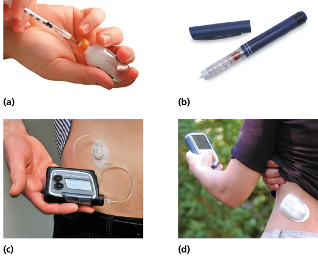
Living with diabetes and prognosis
- Diagnosis means daily glucose checks, medication, exercise, planned meals and emergency readiness — often started with a diabetic educator who sets up routines and handles new problems.
- Smoking — diabetic smokers are three times likelier to die of cardiovascular disease than diabetic nonsmokers; quitting is essential. Alcohol — occasionally, with food, only when well controlled: moderate amounts can raise glucose, excess can drop it dangerously. Stress raises glucose and disrupts routines — reduce it, and manage the rest with relaxation, exercise and enjoyable activities.
- Wear a medical ID — vital if the person cannot speak for themselves, as in insulin shock or a young child. Insulin users keep a glucagon emergency kit: if they pass out from very low glucose, someone else injects it. Milder lows: orange juice or glucose tablets. Regular physical, dental and eye exams.
- Type 1 prognosis — no prevention, no cure, but strict glucose control dramatically delays or prevents heart, kidney, nerve and eye damage. Research targets the genes and environmental triggers (viruses, toxins, diet), drugs that halt the autoimmune attack early, pancreas or islet transplants, and an artificial pancreas: worn outside like a pump, it monitors glucose continuously and adjusts hormone delivery. In trials, both a single-hormone (insulin) and a dual-hormone (insulin + glucagon) version beat the traditional pump at controlling glucose and avoiding hypoglycemia; the dual-hormone version avoided hypoglycemia best.
- Type 2 prognosis — preventable or delayable by weight loss and exercise; untreated, prediabetes can become type 2 in as little as 10 years. Tight glucose and blood-pressure control reduce complications. Research seeks susceptibility genes and the obesity–insulin-resistance link.

10a.3Gestational Diabetes
pp. 196–197Cause and risk
- Gestational diabetes — diabetes that develops in pregnancy; about 7% of US pregnancies, more common among African Americans, Hispanic Americans and American Indians; usually starts in the second half.
- Progressive insulin resistance: the placenta (which feeds the fetus and removes its wastes, Ch. 18) makes hormones that make the mother's cells insulin resistant. Normally her pancreas compensates with more insulin; when it can't, the disease appears. It worsens as the placenta grows and makes more of these hormones, and as pregnancy adds adipose tissue.
- Risk factors: a parent or sibling with type 2; gestational diabetes in an earlier pregnancy; age over 25; overweight before pregnancy; a high-prevalence group.
Consequences
- It usually resolves after delivery, once the placenta is expelled.
- Mother: some develop preeclampsia — potentially life-threatening high blood pressure, excess urine protein and fluid retention. Later: risk of gestational diabetes again and of type 2.
- Fetus: maternal glucose crosses the placenta, but maternal insulin does not. From about three months of gestation the fetal pancreas responds by overproducing insulin, which drives glucose into fetal cells and causes excessive growth — high birth weight, difficult delivery, sometimes a cesarean section (delivery through an incision in the abdominal wall and uterus). After birth the baby may be hypoglycemic from its own high insulin, and it carries almost six times the risk of childhood or adult obesity and type 2 diabetes.
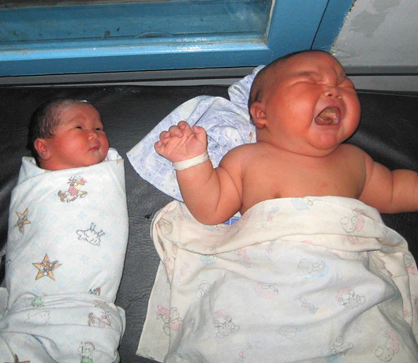
Screening and treatment
- Symptoms may be absent or match types 1 and 2, so screening is routine at 24–28 weeks (earlier if high risk).
- Glucose challenge test — drink glucose, blood drawn 1 hour later; above the cutoff (usually 140 mg/dl) triggers a confirmation test: overnight fast, blood drawn, a stronger glucose drink, then glucose hourly for 3 hours. At least two of the four values (fasting, 1, 2, 3 hours) must be abnormal.
- Treatment: glucose testing, healthy diet, regular exercise; insulin or medication if those fall short. Afterwards, continued screening and every effort to prevent type 2.
- Ch. 11 turns to blood itself.
Stop And Think
1Is gestational diabetes more like type 1 or type 2 in causes, risk factors and treatments? (§10a.3, p. 197)
Type 2 — insulin resistance rather than beta-cell destruction, overlapping risk factors, and diet and exercise first with insulin only if needed.
Boxed essays
Should insurers charge more? (§10a.2, p. 195)
- Diabetics' medical costs are more than twice nondiabetics'. Type 1 cannot be prevented; type 2 can be prevented or delayed by losing weight. Should insurers charge overweight people more? Type 1 diabetics?
Cathy (§10a.3, p. 197)
- During finals, under weeks of stress, Cathy — a diabetic — has nausea, fatigue, extreme thirst and confusion with glucose near 300 mg/dl. She injects insulin and rests; hours later it is still about 300, and she goes to the ER.
- The added complication is diabetic ketoacidosis: without effective insulin her cells burn fat and the liver's ketones acidify her blood — the stress trigger, the symptoms and the failure of home insulin all fit. She most likely has type 1: DKA is likely in type 1 and rare in type 2.
Board Work — Lab 11
The in-lab board sheet, block by block. Handed in at the start of lab on Monday 10/26.
- 1 Hypothalamus and Pituitary Hormones
- 2 Adrenal Gland
- 3 Thyroid & Parathyroid Glands
- 4 Pancreas & Glucose Regulation
- 5 Reproductive Hormones
- 6 Water & Electrolyte Balance
- 7 Water soluble vs lipid soluble Hormones
- 8 Negative and positive feedback
1 · Hypothalamus and Pituitary Hormones
Draw
Hypothalamus over the pituitary. Posterior lobe: two nuclei with axons running down the infundibulum to a capillary plexus — mark OT release and ADH release. Anterior lobe: the hypophyseal portal system (capillary bed, vein, capillary bed). Seven arrows fan out from the anterior lobe to their targets.
- hypothalamus
- diencephalon
- infundibulum
- posterior pituitary
- neurohypophysis
- neurosecretory cells
- paraventricular nucleus
- supraoptic nucleus
- capillary plexus
- oxytocin (OT)
- uterine involution
- ADH / vasopressin
- osmolarity
- aquaporins
- DCT
- collecting duct
- anterior pituitary
- adenohypophysis
- hypophyseal portal system
- releasing hormone
- inhibiting hormone
- GHRH
- somatotrophs
- GH
- IGF-1
- TRH
- thyrotrophs
- TSH
- CRH
- corticotrophs
- ACTH
- GnRH
- gonadotrophs
- FSH
- LH
- inhibin
- lactotrophs
- PRL
- MSH
Write
Posterior Pituitary
- Hypothalamus (HT): part of the diencephalon, below the thalamus; nervous + endocrine roles.
- Infundibulum connects HT to pituitary; holds HT axons extending into the posterior pituitary (PP, neurohypophysis).
- PP hormones are made by HT neurosecretory neurons, stored in their axon terminals in the PP, and released into blood via the capillary plexus.
- PP releases oxytocin (OT) and ADH (vasopressin).
Oxytocin (OT)
- Peptide made by HT neurons; the PP releases it when the cervix stretches in childbirth or an infant suckles. Regulated by positive feedback.
- OT stimulates uterine contractions; they push the fetus against the cervix, stretching and dilating it, which releases more OT — until the fetus is delivered.
- Suckling releases OT; OT contracts milk ducts, releasing milk; infant suckles more — until it stops.
- Post partum, suckling OT also contracts the uterus (uterine involution).
Antidiuretic Hormone (ADH)
- Peptide; released in response to high blood osmolarity, or low blood volume/pressure via RAAS.
- Target 1: DCT + collecting duct cells — ADH inserts aquaporins; more channels, more water reabsorbed. Recaptures the large volume the kidneys filter.
- Target 2: contracts vascular smooth muscle, raising blood pressure.
Anterior Pituitary
- Adenohypophysis; linked to HT by the hypophyseal portal system: HT capillary bed, vein, anterior-pituitary (AP) capillary bed.
- HT releases hormones into it that stimulate or inhibit AP hormone release. AP releases 7 hormones; know each HT releasing hormone and the AP hormone it controls.
Growth Hormone
- Protein. GHRH (HT) stimulates somatotrophs to release GH.
- GH stimulates growth + development. Short term: breaks down fat + glycogen for energy. Long term: amino-acid uptake, protein synthesis, cell division, tissue growth.
- GH directly speeds protein synthesis in muscle + bone and activates IGF-1, which indirectly supports it.
Thyroid Stimulating Hormone
- Glycoprotein; TRH stimulates thyrotrophs to release TSH.
- TSH stimulates thyroid growth + T3/T4 release. High T3/T4 inhibit HT + AP.
Adrenocorticotropic Hormone
- Peptide; CRH (stress) stimulates corticotrophs to release ACTH.
- ACTH stimulates the adrenal cortex to release cortisol + aldosterone. High cortisol inhibits HT + AP.
Follicle Stimulating hormone and Luteinizing hormone
- Glycoproteins; GnRH stimulates gonadotrophs to release FSH + LH.
- FSH stimulates follicle + oocyte development (♀), sperm production (♂).
- LH stimulates estrogen, progesterone + ovulation (♀); testosterone from Leydig cells (♂).
- High testosterone, estrogen or progesterone inhibit HT + AP; FSH raises inhibin, which directly inhibits AP FSH.
Prolactin
- Peptide; prolactin-releasing hormone stimulates lactotrophs to release PRL.
- PRL stimulates mammary development in pregnancy and milk production after birth, when progesterone drops.
Melanocyte Stimulating hormone
- UV light stimulates corticotrophs to secrete MSH; MSH stimulates melanin production; rises in pregnancy.
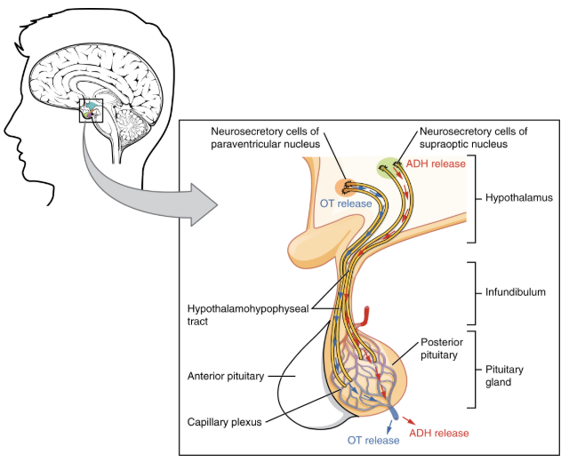
how many hormones the anterior pituitary makes; the lab says seven and adds melanocyte-stimulating hormone (MSH), while the textbook (§10.2 text, summary and Figure 10.6) says six and never mentions MSH. Use seven on the lab exam.
2 · Adrenal Gland
Draw
Triangle capping the kidney, cut open: capsule, cortex in three zones, medulla — each with its hormone. Beside it: the CRH → ACTH → cortisol cascade with (–) back, and the sympathetic nerve to the medulla.
- connective tissue capsule
- adrenal cortex
- zona glomerulosa
- zona fasciculata
- zona reticularis
- adrenal medulla
- mineralocorticoids
- aldosterone
- glucocorticoids
- cortisol
- androgens
- CRH
- ACTH
- gluconeogenesis
- chromaffin cells
- preganglionic neuron
- epinephrine
- norepinephrine
Write
The Adrenal Glands
- Triangular, atop each kidney: outer cortex + inner medulla in a connective tissue capsule; each region makes different hormones, stimulated differently.
- Glomerulosa (outer): mineralocorticoids (mineral balance) — aldosterone.
- Fasciculata: glucocorticoids (glucose metabolism) — cortisol, corticosterone, cortisone.
- Reticularis (deepest): androgens (masculinization) — dehydroepiandrosterone; some glucocorticoids.
- Medulla: stress hormones (sympathetic ANS) — epinephrine, norepinephrine.
Adrenal Cortex
- Aldosterone: from cholesterol, lipid soluble. Low Na⁺, BP or blood volume stimulate it indirectly; high K⁺ and ACTH directly.
- Aldosterone makes the DCT + collecting ducts reabsorb Na⁺ (water follows; volume, BP, Na⁺ restored) and secrete K⁺ + H⁺ into urine.
- Cortisol: cholesterol-derived, lipid soluble; raises blood glucose. Stimulates liver glycogen breakdown, and muscle protein + fat breakdown that feeds liver gluconeogenesis; suppresses inflammation + immunity.
- Cascade + negative feedback: stress stimulates HT to release CRH; CRH stimulates AP to release ACTH; ACTH stimulates cortisol (+ aldosterone). High cortisol inhibits HT + AP.
Adrenal Medulla
- Stress or exercise: sympathetic preganglionic neurons stimulate chromaffin (neuroendocrine) cells to release epinephrine + norepinephrine into blood.
- Same fight-or-flight actions as sympathetic neurons (↑ heart rate, BP, glucose), but blood-borne they reach more targets and last longer, strengthening and lengthening the response.
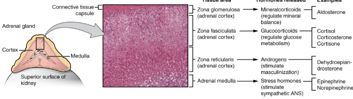
whether ACTH drives aldosterone; the lab says ACTH stimulates release of cortisol and aldosterone, while the textbook says ACTH controls the glucocorticoids and that mineralocorticoids are released "independent of the hypothalamus" (§10.5). Use the lab's version on the lab exam.
3 · Thyroid & Parathyroid Glands
Draw
One thyroid follicle — follicular cells around colloid, parafollicular cells between follicles. The 3-tier loop: HT (TRH), AP (TSH), thyroid (T3/T4), with two (–) lines back. Then the calcium seesaw: high Ca²⁺ — calcitonin; low Ca²⁺ — PTH.
- thyroid gland
- trachea
- larynx
- isthmus
- follicular cells
- parafollicular cells (C cells)
- follicle
- colloid
- iodine
- T3 (triiodothyronine)
- T4 (thyroxine)
- half-life
- amine hormone
- TRH
- TSH
- calorigenic effect
- calcitonin
- hypercalcemia
- osteoclasts
- osteoblasts
- bone deposition
- parathyroid glands
- chief cells
- hypocalcemia
- PTH
- bone resorption
- vitamin D3 / calcitriol
Write
The Thyroid Gland
- Butterfly-shaped; anterior trachea, below the larynx. Two cell types: follicular + parafollicular.
- Follicular cells line follicles and produce colloid (iodine-rich protein fluid) that becomes T3 + T4 — the body's main iodine use.
- TSH stimulates T3/T4 production. T3: most active, short half-life. T4: longer half-life, converted to T3.
- Amine, but lipid soluble.
- T3/T4 raise metabolism (byproduct heat), promote growth + development, boost sympathetic effects.
- 3-tier negative feedback: cold or low T3/T4 stimulates HT to release TRH; TRH stimulates AP to release TSH; TSH stimulates T3/T4 release. High T3/T4 inhibit HT + AP.
- T3/T4 raise basal metabolic rate and body temperature (calorigenic effect).
- The thyroid wraps the trachea; its tissue is mostly follicles, with larger parafollicular cells among the follicle cells.
- Parafollicular (C) cells sense calcium; high Ca²⁺ (hypercalcemia) stimulates them to release protein calcitonin, which lowers Ca²⁺.
- Calcitonin inhibits osteoclasts and indirectly stimulates osteoblasts (bone deposition); inhibits kidney Ca²⁺ reabsorption (DCT + CD).
- Normal Ca²⁺ stops stimulating C cells; calcitonin falls.
The Parathyroid Gland
- 3–5 nodules embedded in the posterior thyroid; major role in calcium regulation.
- Low Ca²⁺ (hypocalcemia) stimulates chief cells to release peptide PTH, which raises Ca²⁺ by targeting bone + kidneys.
- PTH stimulates osteoclasts (bone resorption releases Ca²⁺); increases kidney Ca²⁺ reabsorption; activates vitamin D3 (calcitriol), which stimulates intestinal Ca²⁺ + phosphate absorption.
- Normal Ca²⁺ stops stimulating chief cells; PTH falls. PTH and calcitonin together hold Ca²⁺ at homeostasis.
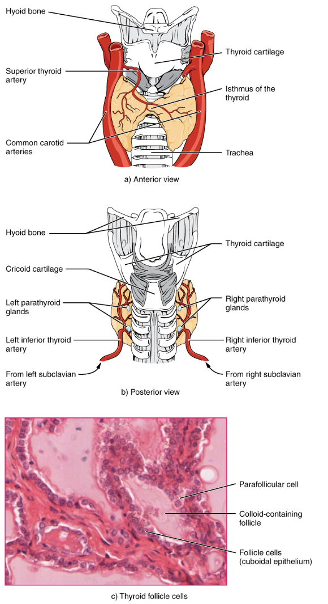
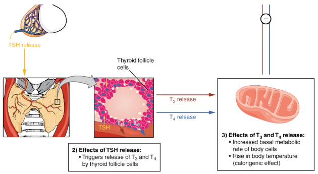
how many parathyroid glands there are; the lab says the parathyroid is 3–5 separate nodules, while the textbook says four glands (§10.4, Figure 10.11). Use 3–5 on the lab exam.
4 · Pancreas & Glucose Regulation
Draw
Pancreas with one islet (alpha + beta cells). The glucose loop: homeostasis 70–110 mg/dL in the middle; high — beta cells, insulin, glucose falls; low — alpha cells, glucagon, glucose rises.
- pancreas
- acinar cells
- pancreatic islets
- alpha cells
- beta cells
- insulin
- glucagon
- glycogen
- glycogenolysis
- gluconeogenesis
- homeostasis
Write
Pancreas
- Exocrine + endocrine. Acinar cells secrete digestive enzymes to the duodenum; islets secrete insulin (beta) and glucagon (alpha).
Glucose regulation
- Holds glucose at 70–110 mg/dL by negative feedback.
- High glucose stimulates beta cells to release insulin: cells take up glucose, liver + muscle store glycogen, adipose stores fat. Glucose falls.
- Low glucose stimulates alpha cells to release glucagon: liver breaks down glycogen (glycogenolysis) and makes new glucose (gluconeogenesis). Glucose rises.
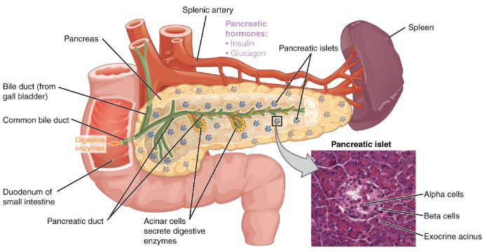
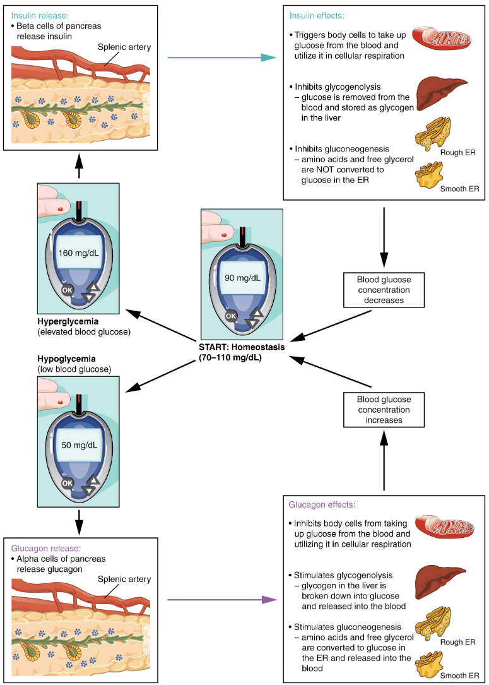
the normal blood-glucose range; the lab sets homeostasis at 70–110 mg/dL, while the textbook (Ch. 10a) gives 70–150 mg/dl across a day and calls a fasting value under 100 normal. Use 70–110 on the lab exam.
5 · Reproductive Hormones
Draw
The hypothalamic–pituitary–gonadal axis twice. Male: GnRH, FSH + LH, testes (testosterone, inhibin), (–) back. Female: GnRH, FSH + LH, follicle (estrogen), LH surge, ovulation, corpus luteum (progesterone).
- GnRH
- FSH
- LH
- Leydig cells
- Sertoli cells
- testosterone
- inhibin
- follicle
- estrogen
- LH surge
- ovulation
- corpus luteum
- progesterone
Write
Gonadotropins
- 3-tier negative feedback: HT GnRH stimulates AP to release FSH + LH, which act on the gonads; their sex hormones and inhibin inhibit HT + AP.
- Male: LH stimulates Leydig cells to make testosterone; FSH stimulates Sertoli cells to support sperm production.
- Female: FSH develops the follicle, which makes estrogen. High late-cycle estrogen flips to positive feedback — the LH surge triggers ovulation.
- The leftover follicle becomes the corpus luteum, which makes progesterone to maintain the endometrium; when it falls, the lining sheds.
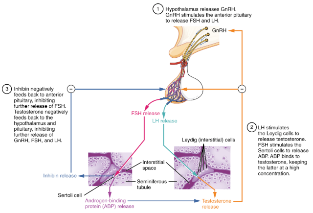
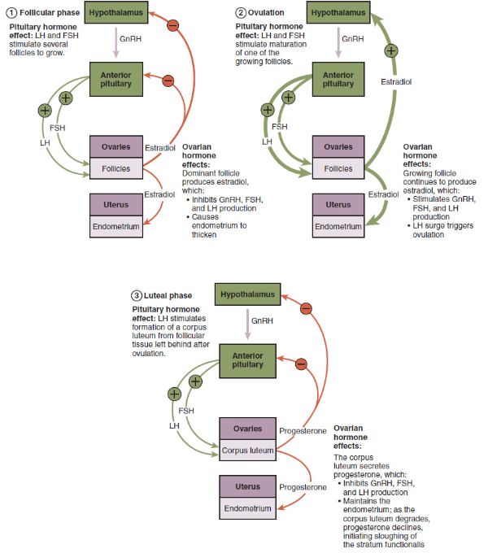
6 · Water & Electrolyte Balance
Draw
The RAAS chain: low BP, kidney renin, angiotensin I, ACE, angiotensin II and its actions. Beside it: ADH and aldosterone raising volume; ANP lowering it.
- RAAS
- renin
- angiotensinogen
- ACE
- angiotensin II
- ADH
- aquaporins
- aldosterone
- ANP
- DCT
- collecting duct
Write
Renin Angiotensin Aldosterone System (RAAS) & Angiotensin II
- Low BP or blood volume stimulates the kidney to release renin; renin and lung ACE turn angiotensinogen into angiotensin II.
- Angiotensin II raises BP: vasoconstriction, thirst, Na⁺ + water reabsorption, and release of aldosterone + ADH.
Antidiuretic Hormone (ADH)
- High osmolarity stimulates ADH; it inserts aquaporins in the DCT + CD, so more water is reabsorbed — concentrated urine, higher blood volume.
Aldosterone
- Makes the DCT + CD reabsorb Na⁺ (water follows if ADH is present) and secrete K⁺ + H⁺.
Atrial Natriuretic Peptide (ANP)
- The opposite: a stretched right atrium (high volume) releases ANP; it cuts Na⁺ reabsorption and inhibits renin — more water lost, lower blood volume.
7 · Water soluble vs lipid soluble Hormones
Draw
Two target cells. Lipid soluble: crosses the membrane, receptor inside, DNA, new protein. Water soluble: membrane receptor, second messenger (cAMP), enzymes activated.
- target cell
- receptor
- lipid-soluble (steroid) hormone
- water-soluble (peptide/protein) hormone
- first messenger
- second messenger
- cAMP
Write
Release, transport, receptors
- Hormones act only on target cells with matching receptors; how depends on solubility.
Lipid soluble — steroids
- From cholesterol; cross the membrane, bind a receptor inside, and switch on genes — new proteins. Slower, longer-lasting. Aldosterone, cortisol, sex steroids, T3/T4.
Water soluble — protein, peptide
- Can't cross the membrane; bind a surface receptor (first messenger) that activates a second messenger (cAMP), which activates existing enzymes. Fast, short-lived. Pituitary hormones, PTH, calcitonin, ANP, epinephrine.
8 · Negative and positive feedback
Draw
Two loops. Negative: HT, AP, gland, hormone, with (–) arrows back up. Positive: oxytocin in childbirth — stretch, OT, contraction, more stretch, ending at delivery.
- negative feedback
- positive feedback
- 3-tiered system
- oxytocin
- LH surge
- homeostasis
Write
Negative feedback
- The result shuts the process off — holds homeostasis; controls most hormones.
- E.g. high T3/T4 or cortisol inhibits HT + AP; insulin lowers glucose, so insulin stops.
Positive feedback
- The result amplifies the process until an outside event ends it.
- E.g. OT in childbirth (ends at delivery); high estrogen causing the LH surge.
Lecture 1 — Mon 10/26
Outlined from the transcript. Paired with weeks/week-12/sources/slides/Ch10_10a AC SP20.pptx. Slide counts are the emphasis signal — more slides means more exam weight.
- L1.1 Where this lecture sits
- L1.2 Smell, finished
- L1.3 Taste: five tastes, five chemicals
- L1.4 Admin: Exam 3, the models, the board work
- L1.5 Endocrine vs exocrine, and where hormones come from
- L1.6 Target cells and receptors
- L1.7 Lipid-soluble hormones
- L1.8 Water-soluble hormones and cAMP
- L1.9 The two kinds compared
- L1.10 Negative and positive feedback
- L1.11 Hormone interactions
- L1.12 The pituitary and the hypothalamus
L1.1Where this lecture sits
- Ch. 9 leftovers first — "just a couple of slides we hadn't gotten to yet… all of, like, 11 slides." Smell, then taste.
- Admin — Exam 3 is next week, in the lab period; he named the lab models on it (L1.4).
- Ch. 10 from slide 1 — "127 slides… I think yours is only like 55." He covers §10.1 in full and opens §10.2. He stops at the hypothalamic releasing and inhibiting hormones: the six anterior-pituitary hormones are "we'll learn all about on Wednesday."
- Exam signals said outright:
- "Lipid-soluble hormones always result in production of brand new protein. Write that shit down."
- The receptor for a lipid-soluble hormone is always inside the cell — he asked it twice.
- "Do the board work… a lot of board-work questions come up on the exam."
L1.2Smell, finished
- The olfactory epithelium in the nasal cavity holds olfactory receptors: sensory neurons whose long hairs are embedded in mucus, the watery medium odorant molecules dissolve in.
- They are bipolar neurons — found only here and in the retina.
- Most damaged neurons are never replaced, especially in the CNS. Olfactory receptors are replaced through life.
- Odorants bind receptors on the olfactory hairs → at threshold, the bipolar neuron carries the signal to the olfactory bulbs, the enlargements at the end of cranial nerve I, and on along the olfactory tracts.
- The bulbs process the information and pass it to the cerebral cortex, through the limbic system — why a scent can bring back an old memory.
- Where chemical becomes electrical (a student's question):
- at the receptor on the olfactory hair, where the bipolar neuron reaches threshold;
- back to chemical at the synapse with a multipolar neuron in the olfactory bulb;
- electrical again on the way to the olfactory association area.
- Sensitivity varies between people — some can't smell certain things, others are extra sensitive to them.
Key terms
- Olfactory receptor
- a bipolar neuron with odorant receptors on its hairs; replaced through life.
- Olfactory bulb
- where cranial nerve I ends; processes odour signals and relays them via the limbic system.
L1.3Taste: five tastes, five chemicals
- Papillae are the bumps you see on your tongue; the big ones at the back are circumvallate (vallate) papillae. Taste buds — taste cells plus support cells in an onion-shaped structure — sit in the crevices between them.
- Taste cells are replaced about three times a month. Mucous membranes heal fast, which is why a burnt mouth recovers.
- Taste cells are not neurons (unlike the bipolar olfactory neurons). Their microvilli — taste hairs — project through the taste pore, bathed in saliva. Chemicals bind receptors on them, and the taste cell signals an attached sensory neuron.
- The five tastes and what triggers each:
| Taste | Responds to | His examples |
|---|---|---|
| Sweet | glucose and similar molecules | fructose, sucrose, lactose; artificial sweeteners hit the same receptors |
| Salty | metal ions — sodium first | NaCl, Epsom salt (MgSO₄), baking soda |
| Sour | H⁺ — protons from acids | vinegar (acetic), citrus (citric), lactic and phosphoric acid |
| Bitter | alkaloids | many natural poisons; hops in beer |
| Umami | glutamate | MSG — "fullness, savoury richness" |
Key terms
- Taste bud
- taste cells plus support cells; onion-shaped; in the crevices between papillae.
- Taste hairs
- the microvilli of taste cells, projecting through the taste pore.
- Flavour
- taste plus smell.
Know the chemical behind each taste. A student asked whether they need bitter's and umami's chemicals; he said "You potentially want to know them" and listed all five: glucose, sodium cations, protons (H⁺), alkaloids, glutamate.
The "hairs" in the senses are not hairs. Asked directly, he said they are cilia or stereocilia in the ear and microvilli in taste.
L1.4Admin: Exam 3, the models, the board work
- Exam 3 is next week — "Monday for you, Wednesday for others", in the lab period. For Matt's section that is Mon 11/02.
- The models on it: the ear model, the eye model, and a dissected brain, not a brain model. He will also bring out the vestibule model, spinal cord and fifth cervical vertebra, "because this is your last chance to get a look at any of the models."
- This week's lab is endocrine. "Do the damn board work, and be prepared to write about it… a lot of board-work questions come up on the exam."
- Missed or extra lab time: other sections meet Thursday and Saturday; the schedule of every section is posted on both lab doors. Dropping into another section is fine.
- Ch. 9 objectives read out: the mechanisms of taste and smell; label the parts of the ear and describe each part's role; how we perceive sound and maintain balance.
Exam 3 lab practical: ear model, eye model, dissected brain. Study the Week 11 senses lab and the Week 10 brain dissection with that list in mind.
L1.5Endocrine vs exocrine, and where hormones come from
- The endocrine system coordinates body systems to maintain homeostasis. It communicates "wirelessly", working with the nervous system: slower, but its effects last longer.
- Endocrine glands — secretory cells release hormones into the extracellular fluid (ECF); the hormones diffuse into capillaries and reach anywhere blood flows.
- Exocrine glands — secrete into ducts, which lead to a body surface, a body cavity or a space within an organ. They stay local. Examples: sebaceous (oil) glands, salivary glands.
- Major endocrine glands: pituitary, thyroid, parathyroid, adrenal, pineal.
- Organs with some endocrine tissue — with what he said about each:
- Hypothalamus — controls the pituitary.
- Thymus — on top of the heart, larger in the young; "T-cell university", where about 95% of trainee T cells are killed and about 5% graduate.
- Pancreas — endocrine and exocrine: islets among acinar cells, whose enzymes drain via the pancreatic duct to the duodenum.
- Ovaries — every egg was made before birth; meiosis II finishes only at fertilisation. Follicles house the eggs and are hormone factories: estrogen almost all the time, progesterone after ovulation, then shut down about 10 days later.
- Testes — make androgens like testosterone in response to LH.
- Heart — atrial natriuretic peptide, released as the atria stretch with blood volume.
- Placenta — the bridge between mother and fetus.
- Stomach and small intestine — signal the pancreas, gallbladder and brain about what food is coming.
- Kidneys — erythropoietin (EPO) tells red bone marrow to make more red blood cells when the blood's oxygen-carrying capacity is low. Altitude training, EPO injection and blood doping all exploit this.
- Pineal gland — circadian rhythm; makes melatonin from serotonin.
Key terms
- Endocrine gland
- secretes hormones into the extracellular fluid; they diffuse into the blood.
- Exocrine gland
- secretes into ducts leading to a surface, cavity or organ space.
- Erythropoietin (EPO)
- Lecture kidney hormone signalling red marrow to make red blood cells.
The study guide asks for exocrine and endocrine "structure and function" as the first two objectives. The one-line answer: ducts versus blood.
L1.6Target cells and receptors
- Hormones in the blood contact virtually every cell, but only target cells respond. A target cell has a receptor specific for that hormone.
- Receptor = lock, hormone = key. Many keys fit the hole; only the right ridges turn it.
- Receptors are proteins that recognise and bind specific hormones. "Hormones aren't necessarily protein. Some of them are."
- Cells without the receptor are unaffected, "almost like they don't even see the hormone."
- His example — LH: a gonadotropic hormone. It tells the interstitial (Leydig) cells between the seminiferous tubules to make testosterone, which enters capillaries and acts on skeleton and muscle.
- How a hormone acts depends on its chemistry — two classes: lipid-soluble and water-soluble.
Key terms
- Target cell
- a cell with a receptor for a given hormone.
- Receptor
- a protein that recognises and binds one specific hormone.
L1.7Lipid-soluble hormones
- All derived from cholesterol — the same four-ring carbon backbone. They include the steroid hormones.
- Main source glands: the gonads (ovaries, testes) and the adrenal (suprarenal) glands — suprarenal = above the kidneys.
- They pass straight through the plasma membrane — "like a curtain of beads."
- The receptor is always inside the cell — in the cytoplasm or the nucleus. Either way, the hormone–receptor complex goes to the nucleus through a nuclear pore.
- It attaches to DNA and activates genes → transcription of new mRNA → translation into new proteins, including enzymes → the new proteins alter the cell's activity.
- The video he played added: the complex changes the receptor's shape, exposing a DNA-binding domain. Many mRNA copies from one gene amplify the signal.
"Lipid-soluble hormones always result in production of brand new protein. Write that shit down."
"Where's the receptor for a lipid-soluble hormone? Always — inside the cell." Asked twice.
L1.8Water-soluble hormones and cAMP
- Made of amino acids — chains of them, from peptides up to proteins. They can't cross the hydrophobic lipid tails of the bilayer.
- They are first messengers. Their receptor is on the outside of the plasma membrane, so they act indirectly, by triggering a second messenger system inside.
- cAMP (cyclic adenosine monophosphate) — a common second messenger:
- hormone binds the receptor → an enzyme (adenylyl cyclase — "you don't need to know that") converts ATP → cAMP;
- cAMP activates an enzyme cascade, switching on proteins already in the cell.
- Kinase cascade — kinase means an enzyme that puts phosphate groups on other proteins, "like putting batteries into a machine." The phosphate comes from the cell's pool of inorganic phosphate.
- His example — epinephrine on a liver cell: cAMP → inactive enzyme 1 activated → enzyme 2 → enzyme 3 → glycogen broken down to glucose. "Is it always 3? No… That's just this story."
- Glycogen is stored in two places: the liver and skeletal muscle.
Key terms
- First messenger
- the water-soluble hormone itself, bound to a surface receptor.
- Second messenger
- the molecule inside the cell that carries out the hormone's effect — e.g. cAMP.
- Kinase
- Lecture an enzyme that adds phosphate groups to proteins, activating them.
He set the depth explicitly: know the mechanics, not the names of the enzymes in the cascade. Adenylyl cyclase is "another year" away.
L1.9The two kinds compared
| Lipid-soluble | Water-soluble | |
|---|---|---|
| Made from | cholesterol (steroids) | amino acids |
| In the plasma | bound to transport proteins — plasma is mostly water | travel freely |
| Enters the cell? | yes | no |
| Receptor | inside — cytoplasm or nucleus | on the cell surface |
| Effect | binds DNA → new proteins | second messenger → activates existing proteins |
The carrier protein is the "Uber driver." Lipid-soluble hormones need one because fat and water don't mix; they're dropped at the cell and pass straight in.
L1.10Negative and positive feedback
- Negative feedback — a rising hormone level, or the hormone's action, inhibits further release. "I wasn't hungry after that first sandwich."
- Glucose: high blood sugar → pancreas releases insulin → glucose moves into cells → blood sugar falls → no more insulin needed.
- Too much insulin with blood sugar already low → loss of consciousness, around 35–40 mg/dL in his telling.
- The video he played added two more: glucagon raises low blood glucose by having the liver convert stored glycogen; calcitonin and PTH hold blood calcium. The adrenal medulla, signalled by hypothalamic neurons, releases epinephrine and norepinephrine for fight-or-flight.
- Positive feedback — the outcome further stimulates the process. Less common; it pushes away from the baseline.
- Two examples you'll meet: fever, and oxytocin in childbirth.
- Oxytocin: the hypothalamus signals the posterior pituitary → OT contracts the myometrium (the uterus's smooth muscle) → the baby is pushed against the cervix → cervical stretch signals the hypothalamus → more OT.
- After birth: the placenta still has to be delivered, so suckling — another OT stimulus — keeps the uterus contracting.
- Pitocin is synthetic oxytocin, given by drip to speed labour. An epidural blocks sensory signals, not hormones.
Key terms
- Negative feedback
- the hormone's level or action inhibits its own further release; restores the baseline.
- Positive feedback
- the outcome further stimulates the process; moves away from the baseline until something ends it.
The study guide asks for an example of each. His examples: insulin and blood glucose for negative; oxytocin in childbirth (or fever) for positive.
L1.11Hormone interactions
- Antagonistic — one hormone's effect opposes another's. When one goes up, the other goes down.
- Synergistic — the response to both together is much greater than to either alone.
- Permissive — one hormone must be present for another to have its effect. "A really nice safeguard."
Key terms
- Antagonistic
- one hormone opposes another — e.g. insulin and glucagon, calcitonin and PTH.
- Synergistic
- together, far more than either alone.
- Permissive
- one must be present for the other to act.
He gave no examples here. The chapter's: antagonistic — insulin vs glucagon; synergistic — epinephrine and glucagon on liver glucose release; permissive — thyroid hormone needed for aldosterone to act on the kidney. The study guide asks for examples of the first two.
L1.12The pituitary and the hypothalamus
- Pituitary (hypophysis) — at the base of the brain; two lobes.
- Anterior lobe (adenohypophysis) — a circulatory connection to the hypothalamus: the hypothalamic–hypophyseal portal system.
- Primary capillary plexus in the hypothalamus → secondary capillary plexus, larger, in the anterior lobe.
- The hypothalamus makes releasing hormones (start anterior-pituitary secretion) and inhibiting hormones (stop it).
- The anterior lobe produces and secretes its own hormones — "six different hormones we'll learn all about on Wednesday."
- Posterior lobe (neurohypophysis) — a neural connection: neurosecretory cells, neurons that secrete ADH and oxytocin down into the posterior lobe, where they are stored until released.
- The transcript ends here — "I'm going to stop right here."
Key terms
- Hypothalamic–hypophyseal portal system
- capillary bed to capillary bed, carrying releasing and inhibiting hormones from hypothalamus to anterior pituitary.
- Releasing / inhibiting hormone
- hypothalamic hormones that start or stop anterior-pituitary secretion.
- Neurosecretory cell
- a hypothalamic neuron that secretes a hormone (ADH or OT) instead of a neurotransmitter.
HIS ANALOGIES
- The endocrine system is wireless communication.
- Receptor = lock, hormone = key.
- Lipid-soluble hormones walk through a curtain of beads.
- Kinases put batteries in a toy.
- The enzyme cascade is a row of dominoes.
- Transport proteins are the hormone's Uber driver.
- The thymus is T-cell university — Navy SEAL school where washouts are killed.
- The uterus is a self-cleaning oven (attributed to Dr. Oz).
TRANSCRIPT FIXES
Lecture 2 — Wed 10/28
Outlined from the transcript. Paired with weeks/week-12/sources/slides/Ch10_10a AC SP20.pptx. Slide counts are the emphasis signal — more slides means more exam weight.
- L2.1 Where this lecture sits
- L2.2 The two lobes, and where ADH and oxytocin are made
- L2.3 Negative feedback, told through the thyroid and calcium
- L2.4 The anterior pituitary's seven hormones, and "tropic"
- L2.5 Growth hormone and its disorders
- L2.6 Prolactin
- L2.7 The tropic hormones: TSH, ACTH, FSH, LH
- L2.8 Melanocyte-stimulating hormone
- L2.9 ADH: water, blood volume, and diabetes insipidus
- L2.10 Oxytocin
- L2.11 The thyroid: thyroid hormone and its disorders
- L2.12 Calcitonin, PTH, and the calcium seesaw
- L2.13 The adrenal glands begin
L2.1Where this lecture sits
- It opens on a recap of water-soluble hormones and the cAMP kinase cascade, then "Where did we leave off?". A student pointed him to the hormone-interactions slide.
- He steps back to the pituitary and re-teaches the two lobes before going hormone by hormone (deck slides 33–82).
- It ends mid-sentence on glucocorticoids from the zona fasciculata (slide 82). Adrenal disorders, stress, the pancreas, Ch. 10a, thymus, pineal and local messengers are still ahead.
- Exam signals said outright:
- "Which hormones are made in the posterior pituitary? Mark all that apply." — None. ADH and oxytocin are made in the hypothalamus and only released from the posterior lobe.
- The three adrenal-cortex zones — "Are you gonna test us on this?" "Yeah."
- Prolactin makes milk; oxytocin ejects it. He corrected the class twice.
The study guide for Ch. 10/10a arrived the same day. Every objective from TSH to the adrenal cortex has a section here.
L2.2The two lobes, and where ADH and oxytocin are made
- The pituitary is the size of a pea, visible only with the brain flipped over. Two lobes: anterior (adenohypophysis) and posterior (neurohypophysis).
- Telling them apart on a slide:
- Neurohypophysis — light pink to greyish, from short unmyelinated neurosecretory axons.
- Adenohypophysis — deep burgundy, from all its blood vessels.
- Anterior lobe — the hypothalamic–hypophyseal portal system:
- hypothalamic releasing or inhibiting hormones enter a capillary bed in the hypothalamus;
- they travel through the infundibulum (infundibular stalk) to a secondary capillary plexus in the anterior lobe;
- releasing hormones tell anterior-pituitary cells to secrete GH, ACTH, LH, FSH, PRL, TSH; inhibiting hormones tell them to stop.
- Posterior lobe — releases ADH and oxytocin, but doesn't make them. Their cell bodies are in the hypothalamus:
- supraoptic nucleus — just above the optic chiasm (where cranial nerve II partially crosses over); "home to the production and secretion of oxytocin";
- paraventricular nucleus — beside the ventricles, the four CSF-filled chambers of the brain (two lateral, a third, a fourth). He named it but did not say which hormone it makes.
Key terms
- Adenohypophysis
- anterior pituitary; makes its own hormones; burgundy on a slide.
- Neurohypophysis
- posterior pituitary; stores and releases ADH and OT; pale on a slide.
- Supraoptic nucleus
- Lecture hypothalamic nucleus above the optic chiasm.
- Paraventricular nucleus
- Lecture hypothalamic nucleus beside the third ventricle.
"None of them were made there." A mark-all-that-apply question on posterior-pituitary hormones is a trap: ADH and OT are made in the hypothalamus, stored and released in the posterior lobe.
which hypothalamic nucleus makes oxytocin; the lecture says the supraoptic nucleus is "home to the production and secretion of oxytocin", while the lab (Lab 11, Activity 1 figure) gives paraventricular → OT and supraoptic → ADH. The textbook names neither. Lecture outranks lab under the course rules, but the lab's pairing is the standard one — check with Whalen before the exam.
He misspoke on the colours, then the sense came through. He said "the neural hypothesis is very deep, like burgundy" right after calling it light pink. From his reasons — few vessels versus many — the anterior lobe is the burgundy one.
L2.3Negative feedback, told through the thyroid and calcium
- Before going hormone by hormone, he ran the thyroid loop as a class quiz: 1. The hypothalamus releases TRH (thyrotropin-releasing hormone). 2. Through the portal system it reaches the anterior pituitary, telling thyrotropic cells to release TSH. 3. TSH's target: the thyroid. Follicular cells release T3 (triiodothyronine) and T4 (tetraiodothyronine, thyroxine), stored in colloid inside the follicles. 4. T3/T4 enter the blood and set the basal metabolic rate — calories used at rest. 5. High T3/T4 → negative feedback to the pituitary (stop TSH) and the hypothalamus (stop TRH).
- Calcitonin — from parafollicular cells, in response to high blood calcium; lowers it by telling osteoclasts to take a break while osteoblasts keep building bone from blood calcium.
- Parathyroid hormone (parathormone, PTH) — from the parathyroid glands on the back of the thyroid, in response to low blood calcium. Raises it by:
- activating osteoclasts;
- increasing calcium reabsorption in the kidneys;
- increasing calcium absorption in the GI tract.
- He went over this "very powerful image" twice: the diagram of hypothalamus, posterior pituitary and anterior pituitary with each hormone's targets (deck Figure 10.6).
"Where does TRH come from?" took the class four tries. The answer is the hypothalamus. Every releasing and inhibiting hormone comes from there.
L2.4The anterior pituitary's seven hormones, and "tropic"
- Seven main hormones (deck slides 37–38): GH, PRL, TSH, ACTH, FSH, LH and MSH. MSH is the one "that wasn't on that chart."
- Tropic = "to nourish, grow, activate, turn on." A tropic hormone influences another gland's secretion.
- His four: TSH, ACTH, FSH, LH.
- FSH and LH are gonadotropic hormones — gonadotropic is a type of tropic — acting on the gonads (testes and ovaries).
- Posterior lobe: ADH and oxytocin.
- ACTH preview — it turns on the adrenal cortex:
- cortisol — a glucocorticoid, governing carbohydrate metabolism;
- aldosterone — a mineralocorticoid from the zona glomerulosa: "I'll give up some potassium if I can get more sodium."
Key terms
- Tropic hormone
- a hormone that influences the secretion of another endocrine gland — TSH, ACTH, FSH, LH.
- Gonadotropic hormone
- a tropic hormone acting on the gonads — FSH and LH.
Seven, not six. He also said "6 major tropic hormones" in passing, but both the deck ("7 main hormones", adding MSH) and his own "7 main hormones" line count seven. That matches the lab; the textbook says six. The Board Work tab carries the conflict.
L2.5Growth hormone and its disorders
- Two hypothalamic hormones regulate GH: growth hormone–releasing hormone (GHRH) and growth hormone–inhibiting hormone (GHIH).
- GH increases the rate of cell division and cell size in all cells, especially bone, muscle and cartilage. A surge at puberty is the growth spurt — "everything hurt."
- Gigantism — abnormally high GH in childhood, while the bones can still lengthen at the epiphyseal growth plate.
- The plate closes in maturity: the zone of calcification overtakes the zones of proliferation and hypertrophy, leaving an epiphyseal line.
- Acromegaly — high GH in adulthood: bones get thicker but not longer. He met Richard Kiel (Jaws in the Bond films; Happy Gilmore), who had both — probably a pituitary tumour.
- Pituitary dwarfism — too little GH in childhood, roughly under 4′9″. Treated with GH in childhood — his friend's son caught up with his peers on GH shots.
- If you take a hormone your body makes, your body stops making it. Stop the medication and you're left with nothing for months.
Key terms
- GHRH / GHIH
- hypothalamic hormones that release / inhibit growth hormone.
- Gigantism
- excess GH in childhood, before the growth plates close.
- Acromegaly
- excess GH in adulthood — bones thicken, not lengthen.
- Pituitary dwarfism
- too little GH in childhood; treatable with GH.
The distinguishing word is the growth plate. Gigantism needs an open epiphyseal plate; acromegaly happens after it closes.
L2.6Prolactin
- Females: PRL stimulates the mammary glands to produce milk — lactation. Mammary glands are modified sweat glands; "breast milk is just fancy sweat" with protein (β-casein).
- Males: involved in producing mature sperm in the testes; too much → sterility.
- Excess in females: infertility, and lactation when no birth has occurred — get the pituitary checked.
- Mimics — compounds that activate the same receptors as a hormone. His example: pesticides that mimic estrogen, linked to higher breast-cancer rates in strawberry-field workers in Salinas and Watsonville.
Key terms
- Prolactin (PRL)
- stimulates milk production; in males aids sperm maturation.
Prolactin produces milk; oxytocin ejects it ("let-down and ejection"). He stopped the class to correct this, and again in L2.10.
L2.7The tropic hormones: TSH, ACTH, FSH, LH
- TSH → follicular cells of the thyroid → T3 and T4 into the colloid → blood → set how calorically demanding every cell is.
- ACTH → the adrenal cortex. Outer cortex, inner medulla — "we are going to see this organization again and again." The cortex's zones, outside to in:
| Zone | Makes | Key hormone |
|---|---|---|
| Zona glomerulosa | mineralocorticoids | aldosterone |
| Zona fasciculata | glucocorticoids | cortisol — "the stress hormone" |
| Zona reticularis | androgens (and estrogen) | — |
Key terms
- Corpus luteum
- the follicle after ovulation; makes estrogen and progesterone.
- hCG
- Lecture from the implanted embryo; keeps the corpus luteum secreting.
- Aromatase
- Lecture enzyme converting testosterone to estrogen.
The three cortex zones, outside to in, with their hormone class. "Wait, are you gonna test us on this?" "Yeah."
He named the zones wrong once, then right. Early on he said "Zona fasciculata, home to… mineralocorticoids", then gave fasciculata glucocorticoids and later put aldosterone in the zona glomerulosa. The table above is the corrected version, matching the deck and the lab.
The study guide asks for FSH and LH "in both males and females." FSH: egg/follicle development ♀ (sperm production ♂ is on the deck and the Board Work tab). LH: ovulation and the corpus luteum ♀, testosterone from Leydig cells ♂.
L2.8Melanocyte-stimulating hormone
- "What does it do? We don't even know."
- During development it leads to new melanocytes. In pregnancy it can darken pigment — the dark stripe down the abdomen.
- It stimulates libido and hunger.
L2.9ADH: water, blood volume, and diabetes insipidus
- ADH (vasopressin) is made in hypothalamic neurosecretory cells and stored and released in the posterior pituitary.
- Action: increases water reabsorption in the kidneys — target the cells of the DCT and collecting duct (deck).
- Also vasoconstriction: vessels narrow → resistance up → blood flow down, blood pressure up.
- Blood volume and blood pressure always move together. Lowering volume is the easiest way to lower pressure — a diuretic such as furosemide (Lasix).
- Stimulus: increased osmolality — more solute dissolved in the plasma.
- ADH adds water back from the renal tubules, diluting the solutes.
- It stops urine production, not urine release. His example: a too-sweet half bottle of Gatorade — add water and the same sugar is half as concentrated.
- Diabetes insipidus — not enough ADH:
- excessive urine production;
- constant thirst;
- dehydration;
- treated with ADH by nasal spray.
- Alcohol (ethanol) inhibits ADH secretion.
Key terms
- ADH (vasopressin)
- increases water reabsorption in the DCT and collecting duct; constricts vessels.
- Osmolality
- Lecture concentration of dissolved solute; increased osmolality is ADH's stimulus.
- Diabetes insipidus
- ADH deficiency — excess urine, thirst, dehydration.
The study guide asks for alcohol's effect on ADH, and diabetes insipidus's signs. Alcohol inhibits ADH → more urine → dehydration. DI: excessive urine, thirst, dehydration.
Osmolality vs osmolarity — "just call it concentration for right now." The only difference is the volume measure.
L2.10Oxytocin
- Target: smooth muscle (and muscle-like cells) — making it contract.
- Females — childbirth: contracts the myometrium → pushes the baby → stretches and dilates the cervix → stretch receptors signal the hypothalamus → more OT. A positive feedback loop.
- Females — milk: OT causes let-down and ejection by contracting the muscle-like cells around the milk ducts. Stimulus: suckling.
- Putting the newborn to the breast drives more OT, which keeps the uterus contracting to deliver the placenta and clear the uterus over the following week.
- Targets: the uterus, the mammary glands, and the brain.
- Males: facilitates sexual behaviour and transport of sperm — contraction (peristalsis) of the vas deferens from the epididymis at ejaculation. Stimulus: sexual excitation.
The study guide asks for oxytocin "in both males and females." Female: uterine contraction (childbirth), milk ejection. Male: sexual behaviour, sperm transport through the vas deferens.
L2.11The thyroid: thyroid hormone and its disorders
- Location: the anterior neck, just in front of the trachea.
- Two cell types: follicular cells → T3 and T4; parafollicular cells → calcitonin.
- Thyroid hormone:
- regulates metabolic rate and heat production;
- maintains blood pressure;
- promotes normal functioning of several organ systems.
- Iodine — T3 has three iodines (tri-iodo), T4 four (tetra-iodo). Iodised salt is a source.
- Simple goiter — not enough iodine, so not enough T3/T4.
- With no negative feedback, the hypothalamus keeps releasing TRH and the pituitary keeps releasing TSH.
- Constant stimulation enlarges the thyroid — "if you work out something enough, it gets bigger."
- His nuclear-medicine patient's goiter looked like a cue ball in her neck.
- Cretinism — too little TH in the fetus or infant: delayed mental and sexual development, dwarfism.
- Myxedema — too little TH in adults (hypothyroid):
- fluid accumulation in the facial tissues (a puffy face);
- decreased alertness, body temperature and heart rate;
- treated with synthetic T3/T4 (Synthroid).
- Graves' disease — oversecretion of TH (hyperthyroid). An autoimmune disorder: antibodies mimic TSH, so the thyroid keeps going.
- Symptoms: raised metabolic rate and heart rate, sweating, nervousness, weight loss.
- Exophthalmos — protruding eyes from fluid accumulation; it can affect vision.
Key terms
- Simple goiter
- thyroid enlargement from iodine deficiency.
- Cretinism
- too little TH in fetal life or infancy.
- Myxedema
- too little TH in adulthood.
- Graves' disease
- autoimmune — antibodies mimic TSH; too much TH.
- Exophthalmos
- protruding eyes in Graves' disease.
The study guide names cretinism, simple goiter and Graves' disease. Know the cause of each, and that the goiter grows because the negative feedback never arrives.
Myxedema lowers body temperature. The transcript has him reading "increase body temperature". Deck slide 67 and the chapter both say ↓ alertness, ↓ body temperature, ↓ heart rate, and his own reasoning (TH regulates heat) gives a decrease. Treat it as a misread.
L2.12Calcitonin, PTH, and the calcium seesaw
- Calcitonin — from parafollicular cells, in response to high blood calcium; lowers it:
- inhibits osteoclasts (less bone breakdown);
- inhibits calcium reabsorption in the kidneys, so the calcium goes out in urine.
- Parathyroid glands — four on the back of the thyroid. They secrete PTH (parathormone) in response to low blood calcium. PTH raises it by:
- stimulating osteoclasts → bone resorption releases calcium;
- increasing calcium reabsorption in the kidneys;
- increasing vitamin D activation → calcitriol → more calcium absorption in the GI tract. Vitamin D is made in the skin under UV light.
- A high-calcium diet doesn't raise blood calcium without activated vitamin D. Likewise, iron pills don't fix anaemia if iron wasn't the problem — intrinsic factor and B12 may be.
- Undersecretion of PTH: nervousness, muscle spasms.
- Oversecretion of PTH:
- calcium pulled from bone → weakened bones;
- elevated blood calcium → kidney stones;
- calcium deposits in soft tissue;
- decreased nervous-system activity.
- The seesaw (Figure 10.13): calcium rises → thyroid secretes calcitonin → bones take up calcium → level falls. Too low → PTH → bones release calcium, kidneys reabsorb, intestine absorbs → level rises.
Key terms
- Calcitonin
- from parafollicular cells; lowers blood calcium.
- PTH (parathormone)
- from the parathyroids; raises blood calcium via bone, kidney and vitamin D.
- Calcitriol
- Lecture activated vitamin D; increases intestinal calcium absorption.
how many parathyroid glands there are; the lecture ("these four buffs"), deck slide 71 ("four small round masses") and the textbook say four, while the lab says the parathyroid is 3–5 separate nodules. Lecture outranks lab under the course rules; expect four on the lecture exam and know the lab's range for the lab portion.
"Calcitonin, not calcitriol." He said it outright. Calcitonin lowers calcium; calcitriol is activated vitamin D, which PTH switches on.
L2.13The adrenal glands begin
- Cortex: glucocorticoids, mineralocorticoids, androgens. Medulla: epinephrine (adrenaline) and norepinephrine (noradrenaline).
- Zona reticularis — innermost cortex layer; androgens and estrogen in both males and females (gonadocorticoids, deck slide 79).
- Zona glomerulosa → mineralocorticoids → aldosterone:
- target: principal cells of the kidneys;
- increases Na⁺ reabsorption into the blood, and gives up K⁺ in exchange;
- water follows sodium → blood volume up → blood pressure up. "So maybe I don't want aldosterone in some instances."
- Glucocorticoids affect glucose homeostasis, from the zona fasciculata. The transcript ends here, mid-sentence.
- Not yet reached (deck slides 82–91): the rest of the glucocorticoids, Addison's disease, Cushing's syndrome, and short- versus long-term stress. All of these are on the study guide.
Key terms
- Gonadocorticoids
- androgens and estrogens from the zona reticularis, in both sexes.
- Aldosterone
- mineralocorticoid; Na⁺ in, K⁺ out at the kidney's principal cells; raises blood volume and pressure.
- Principal cells
- Lecture the kidney cells aldosterone targets.
HIS ANALOGIES
- Calcium for bone comes from the brickyard — the blood — "not from the same brick wall."
- Diluting a too-sweet Gatorade — the same solute in more water.
- The follicle is a rental, and LH is the landlord telling the egg to leave.
- Progesterone keeps the Thanksgiving table set; if no guest arrives, everything is torn down.
- Eggs sit on the outside of the ovary like kernels on a corn cob.
- A goiter is a muscle that never stops being worked out.
- The calcium seesaw — calcitonin on one side, PTH on the other.
TRANSCRIPT FIXES
The week, told once
Nothing here yet.
What goes here
One account of the week across every source, a cram list, and the table of where the sources disagree.
Build this last, once the other tabs are filled.
Drop the source in weeks/week-12/content/synth.md, then run /ingest 12.
Where the sources disagree
Collected automatically from every CONFLICT :: callout in this week's content, plus any rows declared in synth.md. Lecture and lab beat the textbook — but nothing here is resolved for you.
| Point | Textbook | Lab / lecture | Use | From |
|---|---|---|---|---|
| whether the thymus is a gland or an organ with endocrine tissue | §10.1 lists the thymus among organs that merely contain endocrine tissue, while §10.7's heading and Figure 10.2 call it the "thymus gland". A wording difference, not a factual one. | ch10.md | ||
| how FSH's effects are worded | the §10.2 text says FSH promotes "development of egg cells and secretion of estrogen" in females and "maturation of sperm" in males, while Figure 10.2's label says "Stimulates gamete production" and "Stimulates secretion of estrogen by ovaries". Same substance, different wording. | ch10.md | ||
| what calcitonin lowers | the §10.3 text says calcitonin lowers blood calcium, while Figure 10.2's label says it "Decreases blood levels of calcium and phosphate". The text never mentions phosphate. | ch10.md | ||
| whether mineralocorticoid release depends on the hypothalamus | the §10.5 text says the cortex releases mineralocorticoids "independent of the hypothalamus", while Figure 10.16 draws mineralocorticoids and glucocorticoids leaving the same cortex at the end of the single CRH → ACTH pathway, with no separate route. | ch10.md | ||
| which tissues insulin sends glucose into | the §10.6 text lists muscle cells, white blood cells and connective tissue cells, while Figure 10.18 shows muscle cells taking up glucose and adipose tissue using glucose to form fat. Consistent with "fat storage" in the text, but only the figure names adipose tissue. | ch10.md | ||
| how firmly melatonin's job is stated | the §10.8 text says research "has suggested" roles in sleep and mood, the chapter summary says melatonin "establishes biological rhythms and triggers sleep", and Figure 10.2 says it "Reduces jet lag and promotes sleep". The summary and figure state as settled what the text hedges. | ch10.md | ||
| what counts as normal blood glucose | the DKA passage gives normal as 70–150 mg/dl over the course of a day, while the fasting test calls 100 mg/dl or more abnormal and 126 or more diabetic. Different conditions (all-day vs fasting), but the two read as if they disagree. | ch10a.md | ||
| how many hormones the anterior pituitary makes | the lab says seven and adds melanocyte-stimulating hormone (MSH), while the textbook (§10.2 text, summary and Figure 10.6) says six and never mentions MSH. Use seven on the lab exam. | board.md | ||
| whether ACTH drives aldosterone | the lab says ACTH stimulates release of cortisol and aldosterone, while the textbook says ACTH controls the glucocorticoids and that mineralocorticoids are released "independent of the hypothalamus" (§10.5). Use the lab's version on the lab exam. | board.md | ||
| how many parathyroid glands there are | the lab says the parathyroid is 3–5 separate nodules, while the textbook says four glands (§10.4, Figure 10.11). Use 3–5 on the lab exam. | board.md | ||
| the normal blood-glucose range | the lab sets homeostasis at 70–110 mg/dL, while the textbook (Ch. 10a) gives 70–150 mg/dl across a day and calls a fasting value under 100 normal. Use 70–110 on the lab exam. | board.md | ||
| which hypothalamic nucleus makes oxytocin | the lecture says the supraoptic nucleus is "home to the production and secretion of oxytocin", while the lab (Lab 11, Activity 1 figure) gives paraventricular → OT and supraoptic → ADH. The textbook names neither. Lecture outranks lab under the course rules, but the lab's pairing is the standard one — check with Whalen before the exam. | lec2.md | ||
| how many parathyroid glands there are | the lecture ("these four buffs"), deck slide 71 ("four small round masses") and the textbook say four, while the lab says the parathyroid is 3–5 separate nodules. Lecture outranks lab under the course rules; expect four on the lecture exam and know the lab's range for the lab portion. | lec2.md | ||
Source dots: textbook · lab · lecture.